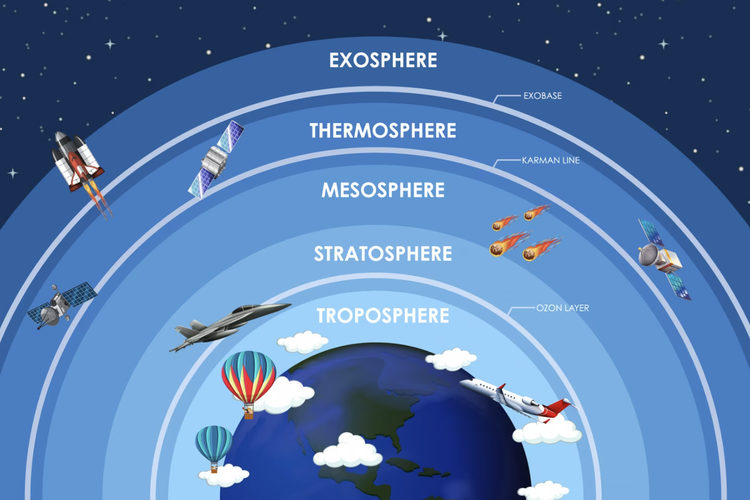

Atmosfer
Atmosfer adalah lapisan gas yang menyelubungi planet sehingga membantu keberlangsungan makhluk hidupnya. Tanpa adanya lapisan atmosfer di Bumi, di siang hari Bumi akan sangat panas dan malam hari akan sangat dingin. Berkat adanya lapisan atmosfer, manusia bisa hidup dengan nyaman dan aman di Bumi meskipun jarak planet ini dengan Matahari cukup dekat dibandingkan dengan planet-planet lain. Lapisan atmosfer juga berperan menjaga bumi dari benturan benda-benda langit yang menabrak bumi serta menjaga siklus, seperti dikutip dari buku Explore Ilmu Pengetahuan Alam untuk SMP/MTs Kelas VII oleh Sadiman, SPd.
Pengertian
Dikutip dari Sumber Belajar Kemendikbud, kata atmosfer berasal dari kata bahasa Yunani, yakni atmos yang berarti uap air dan gas dan saphira yang diartikan sebagai selimut. Dapat disimpulkan, atmosfer merupakan lapisan gas yang menyelimuti suatu planet, termasuk Bumi. Biasanya, ketebalan atmosfer kurang lebih 1.000 km, sedangkan atmosfer yang berada di Bumi mempunyai ketinggian sekitar 560 km di atas permukaan laut. Massa atmosfer Bumi yaitu 59 x 1.014 ton.
Lapisan Atmosfer

Atmosfer terdiri dari 5 lapisan, yaitu:
1. Lapisan Troposfer
2. Lapisan Stratosfer
3. Lapisan Mesosfer
4. Lapisan Thermosfer
5. Eksosfer
Penyebab pemansan global:
1. Meningkatnya gas rumah kaca
Gas rumah kaca terjadi akibat adanya pembakaran minyak bumi, seperti bahan bakar batu bara serta pembakaran gas alam.
2. Efek Rumah Kaca
Efek rumah kaca ini menjadikan panas yang berada di bumi tidak dapat dipantulkan ke luar angkasa, tetapi terperangkap di atmosfer.
efek rumah kaca ini bermanfaat manusia, namun jika berlebihan akan berdampak buruk terhadap iklim dan cuaca yang ada di bumi.
3. Polusi Sampah Plastik Yang Tidak Dapat Didaur Ulang
Gas metana yang berasal dari plastik yang terkena sinar matahari dikatakan sebagai salah satu penyebab utama perubahan iklim, hal ini
berhubungan dengan peningkatan pemanasan global. Sampah yang setiap hari dihasilkan manusia terutama sampah-sampah yang tidak bisa
didaur ulang seperti styrofoam dan plastik juga menjadi sumber lain dari emisi CO2.
4. Boros Penggunaan Listrik
Pemborosan listrik membuat cadangan energi listrik menjadi semakin menipis karena energi listrik memerlukan pembakaran batu bara
sehingga meningkatkan pemanasan global.
5. Udara Akibat Asap Industri Pabrik
Industri pabrik menyebabkan banyaknya asap yang yang dihasilkan, dan dapat mengakibatkan polusi udara yang akan membuat lingkungan
tercemar dan terjadinya pemanasan global.
6. Penebangan Pohon, Kerusakan, dan Pembakaran Hutan
Perusakan hutan akan menyebabkan pemanasan global, karena hutan memiliki fungsi menyerap gas karbondioksida, dan hutan merupakan
penghasil oksigen.
7. Penggunaan Chlorofluorocarbon CFC secara berlebihan
Chlorofluorocarbon (CFC) adalah suatu bahan kimia yang diproduksi untuk berbagai kebutuhan peralatan rumah tangga seperti AC atau
pendingin ruangan dan kulkas. Zat kimia ini dapat mengakibatkan penipisan lapisan ozon.